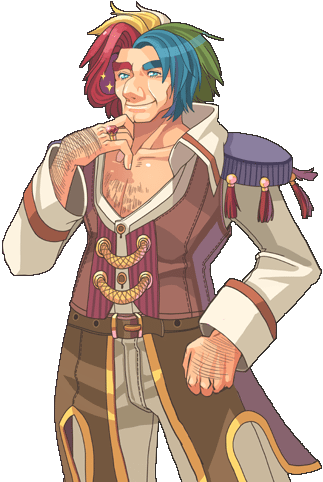
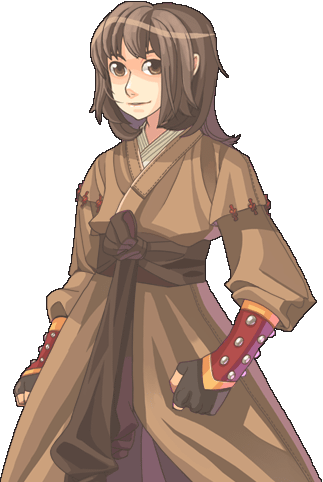
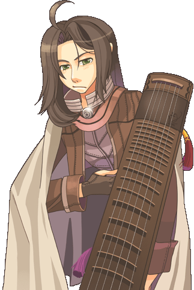
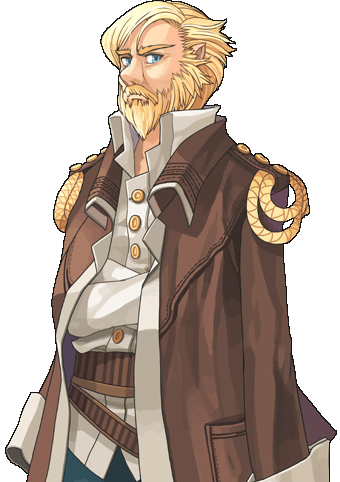
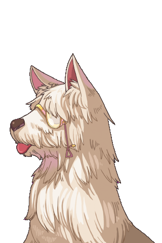
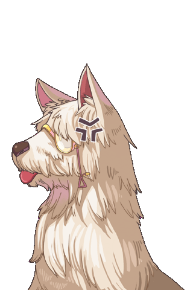
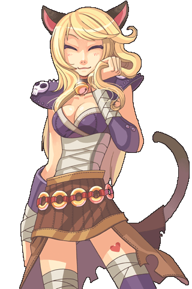
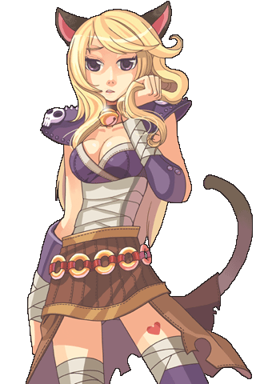
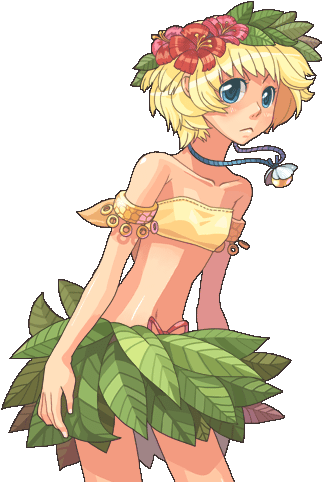

画像にリンクがはってあるものは、クリックすると別窓で大きめサイズが表示されます。
|  |  |
ビンセント=カーシャル （アルケミスト転職クエ・アルデバラン） | ハンター （ハンター転職クエ・フェイヨン室内） |

|  |
アイオルデ （バード転職クエ・コモド） | アイオルデ （バード転職クエ・コモド） |

|  |
騎士団長ヘルマン （騎士転職クエ・プロンテラ騎士団内） | 騎士団長ヘルマン （騎士転職クエ・プロンテラ騎士団内） |
|  |  |
マリア （WIZ転職クエ・ゲフェン中央塔） | マリア （WIZ転職クエ・ゲフェン中央塔） |

|

|
マリア （WIZ転職クエ・ゲフェン中央塔） | ケイロン=グリック （セージ転職クエ・セージキャッスル奥） |

|  |
ヒュッケ （ブラックスミス転職クエ・モロク） | ヒュッケ （ブラックスミス転職クエ・モロク） |
|  | |
ヒュッケ （ブラックスミス転職クエ・モロク） | エイル （ダンサー転職クエ・コモド） |
|  | |
エイル （ダンサー転職クエ・コモド） | エイル （ダンサー転職クエ・コモド） |
back
(c) Gravity Co., Ltd. & Lee MyoungJin(studio DTDS). All rights reserved.
(c) GungHo Online Entertainment, Inc. All Rights Reserved.
当コンテンツの再利用（再転載・配布など）は、禁止しています。